Extreme Values#
Discussion & Definitions#
Finding the largest and smallest values of a function is critical to solving optimization problems, such as, minimizing the materials in construction or maximizing profit.
We will start with absolute extremum.
Definition: Absolute Extremes
Let \(f\) be a function defined over an interval \(I\) and let \(c \in I\). We say \(f\) has an absolute maximum on \(I\) at \(c\) if \(f(c) \geq f(x)\) for all \(x \in I\). We say \(f\) has an absolute minimum on \(I\) at \(c\) if \(f(c) \leq f(x)\) for all \(x \in I\). If \(f\) has an absolute maximum on \(I\) at \(c\) or an absolute minimum on \(I\) at \(c\), we say \(f\) has an absolute extremum on \(I\) at \(c\).
A couple things to note before we proceed,
A quick note about the language here. If a function \(f\) has an absolute extremum over an interval \(I\) at \(c\), the absolute extremum is \(f(c)\). The real number \(c\) is a point in the domain at which the absolute extremum occurs.
Another thing to note is that an absolute extremum not only relies on the function but also the interval \(I\). So a function could have an absolute extremum on one interval but not on another.
There could be several places where the function attains an absolute maximum and/or its absolute minimum.
Let’s look at a few examples to get a feel for the possibilities.
Take the function, \(f(x) = \frac{x}{x^{2} + 1}\), graph is below.
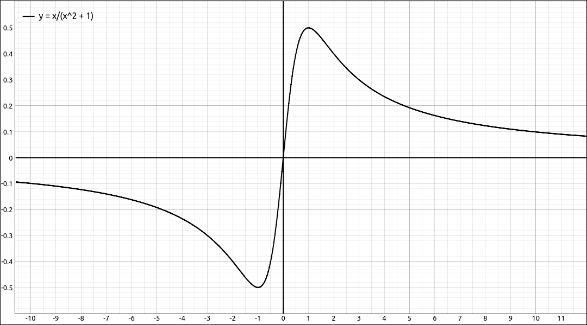
\(f(x) = \frac{x}{x^{2} + 1}\)#
On the interval \((-\infty, \infty)\), the function has an absolute maximum of \(1/2\) at \(x = 1\) and an absolute minimum of \(-1/2\) at \(x = -1\).
On the interval \([-10, 10]\), the function has an absolute maximum of \(1/2\) at \(x = 1\) and an absolute minimum of \(-1/2\) at \(x = -1\).
On the interval \([0, \infty)\), the function has an absolute maximum of \(1/2\) at \(x = 1\) and an absolute minimum of \(0\) at \(x = 0\).
On the interval \((0, \infty)\), the function has an absolute maximum of \(1/2\) at \(x = 1\) and no absolute minimum.
On the interval \([1, 5]\), the function has an absolute maximum of \(1/2\) at \(x = 1\) and an absolute minimum of \(5/26\) at \(x = 5\).
On the interval \((1, 5]\), the function has no absolute maximum and an absolute minimum of \(5/26\) at \(x = 5\).
On the interval \((1, 5)\), the function has no absolute maximum and no absolute minimum.
Take the function, \(f(x) = x^3\), graph is below.
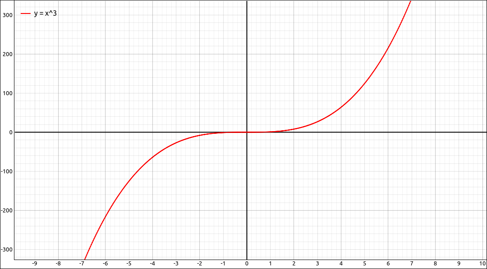
\(f(x) = x^3\)#
On the interval \((-\infty, \infty)\), the function has no absolute maximum and no absolute minimum.
On the interval \((0, \infty)\), the function has no absolute maximum and no absolute minimum.
On the interval \([0, \infty)\), the function has no absolute maximum and an absolute minimum of 0 at \(x = 0\).
Take the function, \(f(x) = \sin(x)\), graph is below.
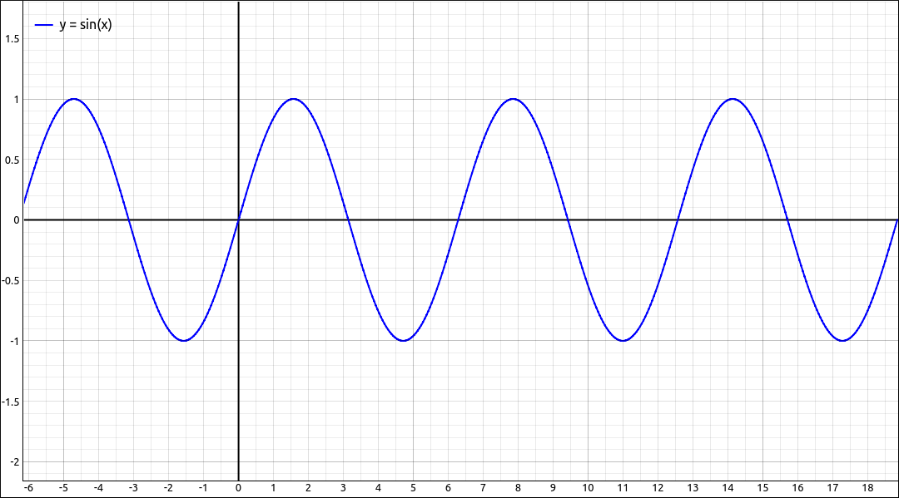
\(f(x) = \sin(x)\)#
On the interval \((-\infty, \infty)\), the function has an absolute maximum of 1 at \(\frac{\pi}{2} + 2\pi k\) and an absolute minimum of \(-1\) at \(\frac{3\pi}{2} + 2\pi k\). So there are an infinite number of places where the function attains its absolute maximum and its absolute minimum.
On the interval \([0, 4\pi]\), the function has an absolute maximum of 1 at \(\frac{\pi}{2}\) and \(\frac{5\pi}{2}\) and an absolute minimum of \(-1\) at \(\frac{3\pi}{2}\) and \(\frac{7\pi}{2}\).
With all of these possibilities it is nice to have some general results that guarantee the existence of an absolute maximum and minimum, the Extreme Value Theorem does just that.
Theorem: Extreme Value Theorem
If \(f\) is a continuous function over the closed, bounded interval \([a, b]\), then there is a point in \([a, b]\) at which \(f\) has an absolute maximum over \([a, b]\) and there is a point in \([a, b]\) at which \(f\) has an absolute minimum over \([a, b]\).
For example, with \(f(x) = \frac{x}{x^{2} + 1}\),
On the interval \([-10, 10]\), the function has an absolute maximum of \(1/2\) at \(x = 1\) and an absolute minimum of \(-1/2\) at \(x = -1\).
On the interval \([1, 5]\), the function has an absolute maximum of \(1/2\) at \(x = 1\) and an absolute minimum of \(5/26\) at \(x = 5\).
Definition: Local Extremes
A function \(f\) has a local maximum at \(c\) if there exists an open interval \(I\) containing \(c\) such that \(I\) is contained in the domain of \(f\) and \(f(c) \geq f(x)\) for all \(x \in I\). A function \(f\) has a local minimum at \(c\) if there exists an open interval \(I\) containing \(c\) such that \(I\) is contained in the domain of \(f\) and \(f(c) \leq f(x)\) for all \(x \in I\). A function \(f\) has a local extremum at \(c\) if \(f\) has a local maximum at \(c\) or \(f\) has a local minimum at \(c\).
For example, take \(f(x) = x^3-x\), graph below,
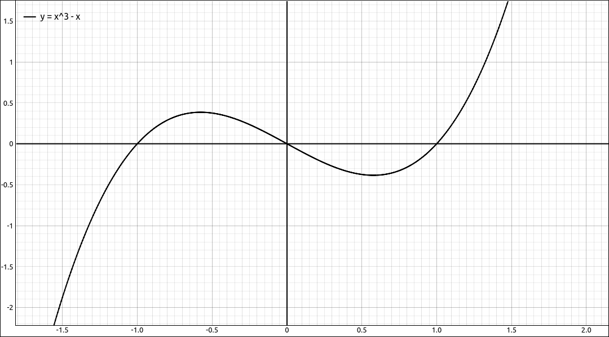
\(f(x) = x^3 - x\)#
On \((-\infty, \infty)\) the function has no absolute maximum and no absolute minimum. But it does have a local maximum of \(\frac{2 \sqrt{3}}{9}\) at \(x = - \frac{\sqrt{3}}{3}\) and a local minimum of \(-\frac{2 \sqrt{3}}{9}\) at \(x = \frac{\sqrt{3}}{3}\). Although we can simply see this, if we follow the definition to the letter we need to come up with a couple intervals. For the local maximum we can use \((-1, 0)\) (or \((-0.75, -0.25)\) or \((-0.6, -0.5)\)). For the local minimum we can use \((0, 1)\), amongst others.
As another example, \(f(x) = x^{5} - 3 x^{3} + x\), graph below,
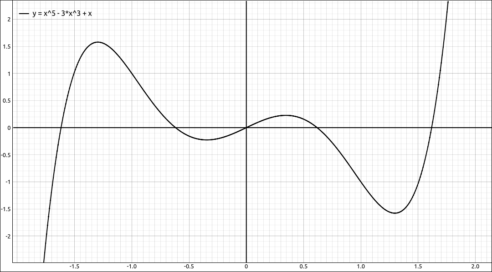
\(f(x) = x^{5} - 3 x^{3} + x\)#
This function has two local maximums and two local minimums. The local maximums are
and
The local minimums are
and
One more example, consider the following function,
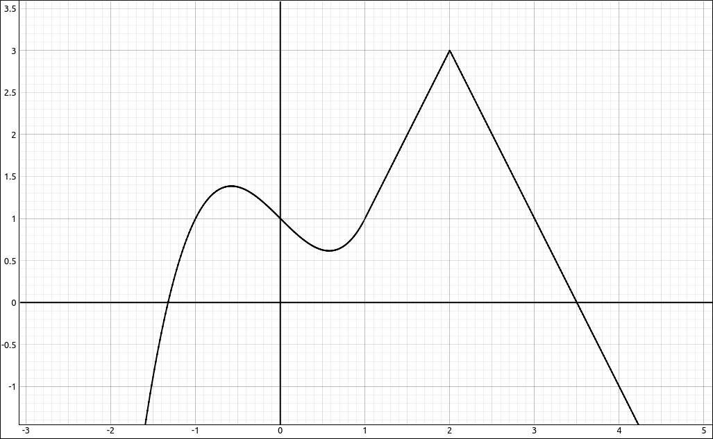
Critical Point Example#
It has a local maximum of about 1.4 around \(x = -0.6\), a local minimum of about 0.6 around \(x = 0.6\), and another local maximum of 3 at \(x = 2\).
It should be fairly clear that we are gearing up to find these local maximums and local minimums and of course it will relate to the derivative of the function. Take the above example, informally speaking, the local maximums and minimums occur at spots where the function “turns around”. There are essentially two ways that a continuous function can turn around, either smoothly were the derivative will exist or at a sharp corner where the derivative will not exist. If the derivative exists at the turnaround point the transition is smooth and if we think about tangent lines to the curve at that point the slope must be 0. Hence the derivative is 0. This observation gives us the following definition of a critical point or critical number as well as Fermat’s Theorem.
Definition: Critical Point
Let \(c\) be an interior point in the domain of \(f\). We say that \(c\) is a critical point or critical number of \(f\) if \(f'(c) = 0\) or \(f'(c)\) is undefined.
Theorem: Fermat’s Theorem
If \(f\) has a local extremum at \(c\) and \(f\) is differentiable at \(c\), then \(f'(c) = 0\).
As we have seen before with theorems, we need to be a little careful about how we read them. This is saying that if we have a local extreme then it must be at a critical number. It does not say that we must have an extreme at every critical number. Two very quick examples to illustrate this, first \(f(x) = x^3\), there is a critical value at \(x = 0\), since \(f'(x) = 3x^2\), and hence \(f'(0) = 0\), but there is no local maximum or minimum at \(x = 0\).
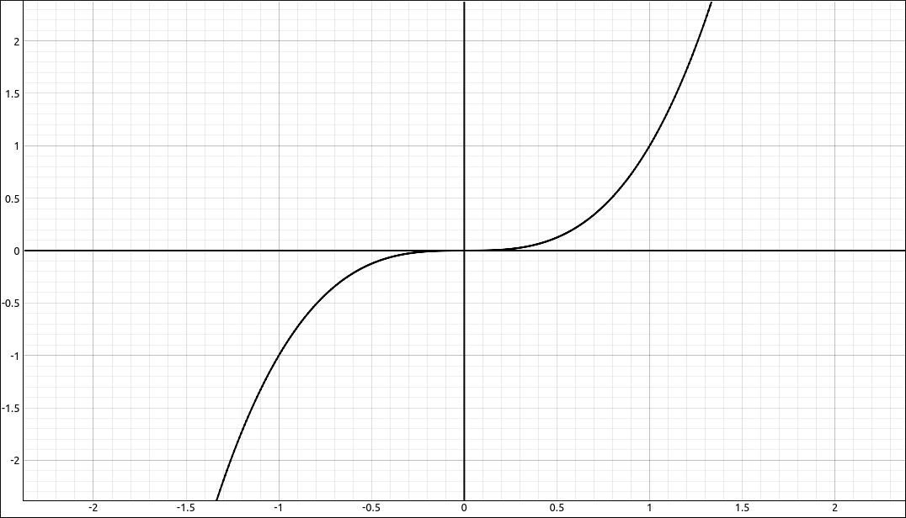
\(f(x) = x^3\)#
Another example is \(f(x) = \sqrt[3]{x}\), there is a critical value at \(x = 0\), since \(f'(x)\) does not exist there. \(f'(x) = \frac{1}{3 x^{\frac{2}{3}}}\) and hence \(f'(0)\) is undefined, but there is no local maximum or minimum at \(x = 0\).
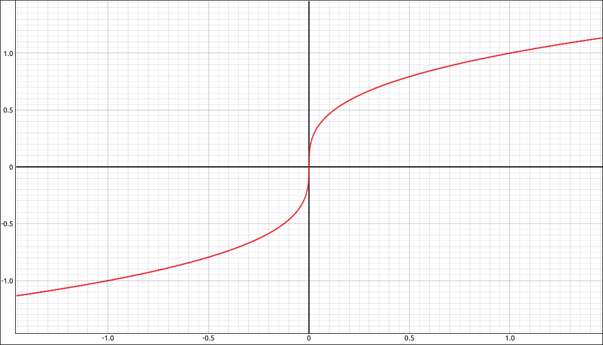
\(f(x) = \sqrt[3]{x}\)#
Putting all of this together we have the following theorem about absolute extrema.
Theorem: Location of Absolute Extrema
Let \(f\) be a continuous function over a closed, bounded interval \(I\). The absolute maximum of \(f\) over \(I\) and the absolute minimum of \(f\) over \(I\) must occur at endpoints of \(I\) or at critical points of \(f\) in \(I\).
This theorem can be rewritten into an algorithm for finding absolute extrema.
Problem Solving: Locating Absolute Extrema over a Closed Interval
Consider a continuous function \(f\) defined over the closed interval \([a, b]\).
Evaluate \(f\) at the endpoints \(x = a\) and \(x = b\).
Find all critical points of \(f\) that are in the interval \((a, b)\) and evaluate \(f\) at those critical points.
Compare all the functional values found in the previous steps, the largest is the absolute maximum of \(f\) and the smallest is the absolute minimum of \(f\).
Example: \(f(x) = x^3-x\)#
In this example we are going to find all the local maximums and minimums of the function \(f(x) = x^3-x\).
GeoGebra#
Input the function,
x^3-x
The quick way to get approximations to the local maximums and minimums, as well as roots and the y intercept, is to select Special Points from the objects menu.
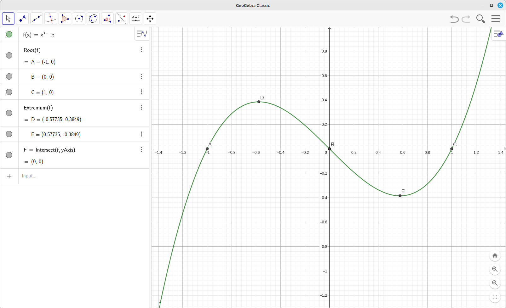
GeoGebra Special Points#
You will note that the option ran three functions, Root, Extremum, and Intersect. You could have run these separately as well. One downside to this is that the displayed values are approximations. If you want exact values you can find the roots of the derivative, that is, solve \(f'(x) = 0\). To do so, in a new cell type in Solve, select Solve, the solve function asks for an equation you can input just f' or f'(x) or f'(x) = 0. The output will be the exact answers, if they can be calculated. You may also have noted that there is a Solutions function. This is the same as the Solve command but returns approximate values. Also, from the solve command the resulting cell has a button that will toggle between exact and approximate mode. This also shows you that the NSolve command could have been used in place of Solve which would start in approximate mode and toggle to exact mode.
Another note here is that the Solve command will return the solutions but will not graph them. The solutions are in list form, lets say they are l1. In a new cell input l1 and it will approximate the solutions as well as graph these as vertical lines. If you had use the Solutions command instead of the Solve command you would not need to do the approximation step.
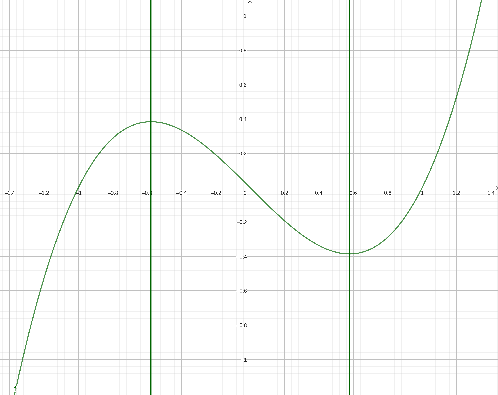
GeoGebra using Solve#
One advantage ot using Solutions in stead of Solve is that you can find the corresponding y-values from the list result of Solutions but not from the list solutions from Solve. Had you used Solutions and say the list name was l2 then the y-values could be calculated using f(l2).
CLAE#
Input and graph the function,
x^3-x
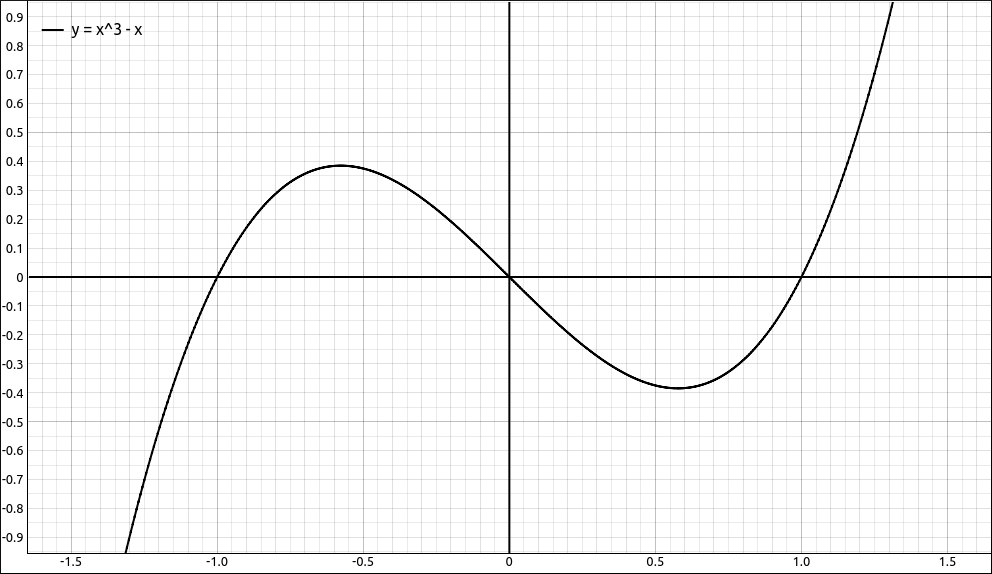
\(f(x) = x^3-x\)#
To find the critical numbers first find the derivative, select the expression, select Calculus > Derivative, variable x, order 1. The result is \(3 x^{2} - 1\). Then solve the equation \(f'(x) = 3 x^{2} - 1 = 0\) by selecting Algebra > Solve, variable x and the result will be,
Click and drag these over to the graph and change the type to vertical lines.
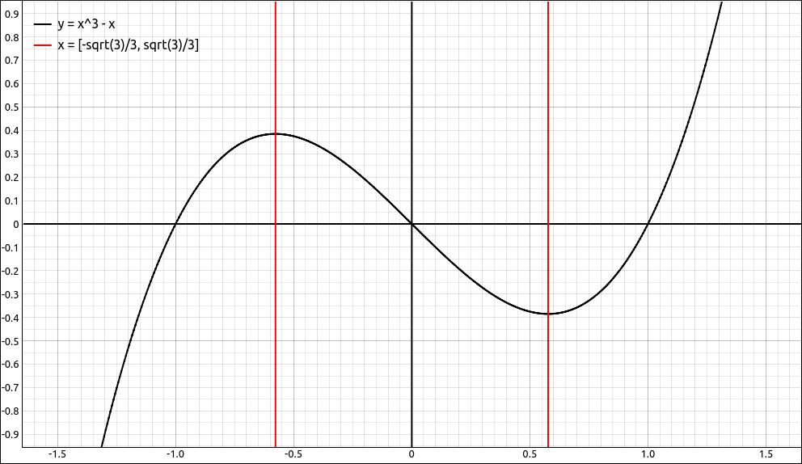
\(f(x) = x^3-x\) with Critical Values#
To get the corresponding y-values there are two options,
Option 1: Select the original function, select Algebra > Evaluate, the variable is x, for the expression input R3[0]. This assumes that the solutions to the derivative equaling 0 are in the R3 result. What R3[0] will do is extract the first entry of the list stored in R3. Hence it will evaluate the function at the first solution. Then do the same thing again but this time use R3[1] to evaluate the second solution. Your results will be \(\frac{2 \sqrt{3}}{9}\) and \(-\frac{2 \sqrt{3}}{9}\) respectively.
Option 2: First extract all the solutions to their own output cells by selecting the solution list output, then select Edit > Extract from List > Extract All List Entries. Now evaluate each one by selecting the original function, then select Algebra > Evaluate, the variable is x, for the expression input R4 (assuming that the first entry went into R4). Then do the same but use R5 instead of R4. Your results will be \(\frac{2 \sqrt{3}}{9}\) and \(-\frac{2 \sqrt{3}}{9}\) respectively.
CLAE does have a feature to find both absolute and local maximums and minimums on finite intervals. Although this is quicker to a solution, the above methods help you understand the process a bit better. Nonetheless, once you understand the process and can do these calculations by hand, the machine can help you out with more difficult situations.
Select the function, then select Calculus > Maximums and Minimums, a dialog box will appear with numerous options. From the graph it looks like all of our local extrema are between \(-1\) and 1. So input \(-1\) and 1 for the lower and upper bounds. For this exercise we want local extrema so select Local. We also want both the maximums and minimums, so select Both. For the next option we could have the program just output the y-values of the extremes or the points, we will want the points here so select Point. The options below this are to choose between exact numeric output or approximations. We will leave it as exact but if the program cannot produce exact solutions we will redo it with approximations. Click OK and we get,
If we click and drag this over to the graph it will come in as a point set and along with the curve we see,
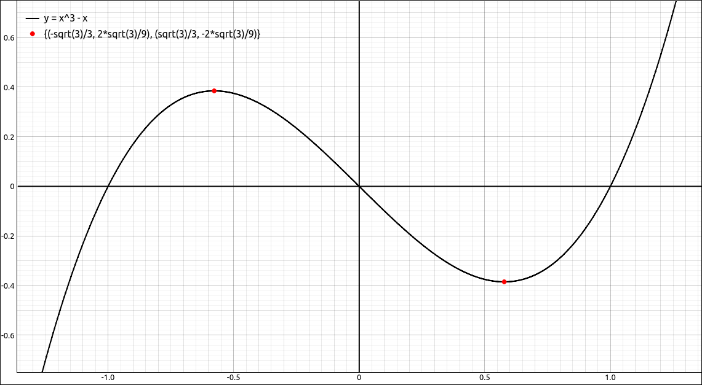
\(f(x) = x^3-x\) with Extreme Points#
Maxima#
Input and graph the function,
kill(all);
f(x):=x^3-x
wxplot2d(f(x),[x,-1.5,1.5])
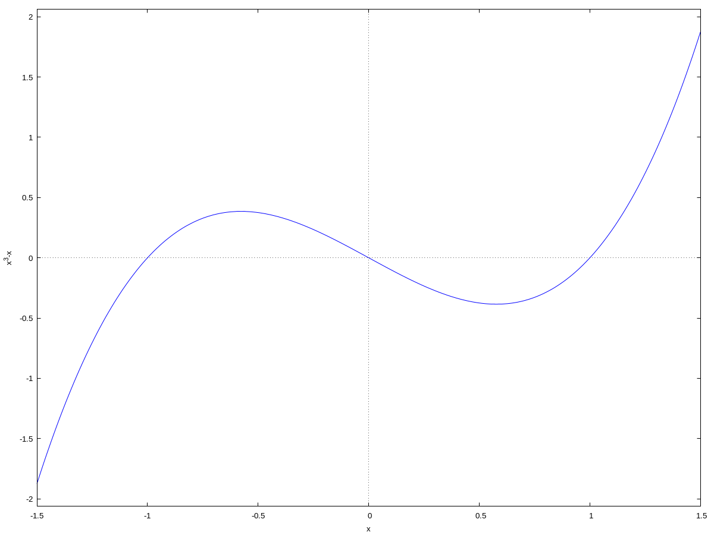
\(f(x) = x^3-x\)#
Take the derivative,
df:diff(f(x),x)
Solve \(f'(x) = 0\),
sl:solve(df=0,x)
The result will be,
To get the corresponding y-values we can evaluate each of the two solutions by extracting the values from the list of solutions. To evaluate the function at the first solution can be done with,
f(rhs(sl[1]))
and the second can be done with,
f(rhs(sl[2]))
What is happening here is that the solution list was stored in sl from our solve command. Then sl[1] is the first entry, sl[2] is the second entry, and so on if the list was longer. Each entry is an equation and we want the right hand side of the equation, which is what the rhs function extracts. Once extracted we simple evaluate the function at that number. Your results should be the following, respectively.
Example: \(f(x) = x^3-x\) on \([-1, 2]\)#
In this example we are going to find the absolute maximums and minimums of the function \(f(x) = x^3-x\) on the interval \([-1, 2]\).
GeoGebra#
Input the function,
x^3-x
The quick way to get approximations to the local maximums and minimums, as well as roots and the y intercept, is to select Special Points from the objects menu.
\(f(x) = x^3-x\) with Special Points#
You will note that the option ran three functions, Root, Extremum, and Intersect. You could have run these separately as well. One downside to this is that the displayed values are approximations. If you want exact values you can find the roots of the derivative, that is, solve \(f'(x) = 0\). To do so, in a new cell type in Solve, select Solve, the solve function asks for an equation you can input just f' or f'(x) or f'(x) = 0. The output will be the exact answers, if they can be calculated. You may also have noted that there is a Solutions function. This is the same as the Solve command but returns approximate values. Also, from the solve command the resulting cell has a button that will toggle between exact and approximate mode. This also shows you that the NSolve command could have been used in place of Solve which would start in approximate mode and toggle to exact mode.
Another note here is that the Solve command will return the solutions but will not graph them. The solutions are in list form, lets say they are l1. In a new cell input l1 and it will approximate the solutions as well as graph these as vertical lines. If you had use the Solutions command instead of the Solve command you would not need to do the approximation step.
\(f(x) = x^3-x\) using Solve#
One advantage ot using Solutions in stead of Solve is that you can find the corresponding y-values from the list result of Solutions but not from the list solutions from Solve. Had you used Solutions and say the list name was l2 then the y-values could be calculated using f(l2).
Continuing with the determination of the absolute maximums and minimums we first take all the critical numbers in our interval of interest, \([-1, 2]\). The approximate critical numbers are \(\{-0.57735, 0.57735\}\) both are in the interval and have functional values \(\{0.3849, -0.3849\}\) respectively. Also, check the endpoints by evaluating the function at \(-1\) and 2, which are 0 and 6 respectively.
So the function has an absolute minimum of \(-0.3849\) at \(x = \frac{\sqrt{3}}{3} \approx 0.57735\) and an absolute maximum of 6 at \(x = 2\).
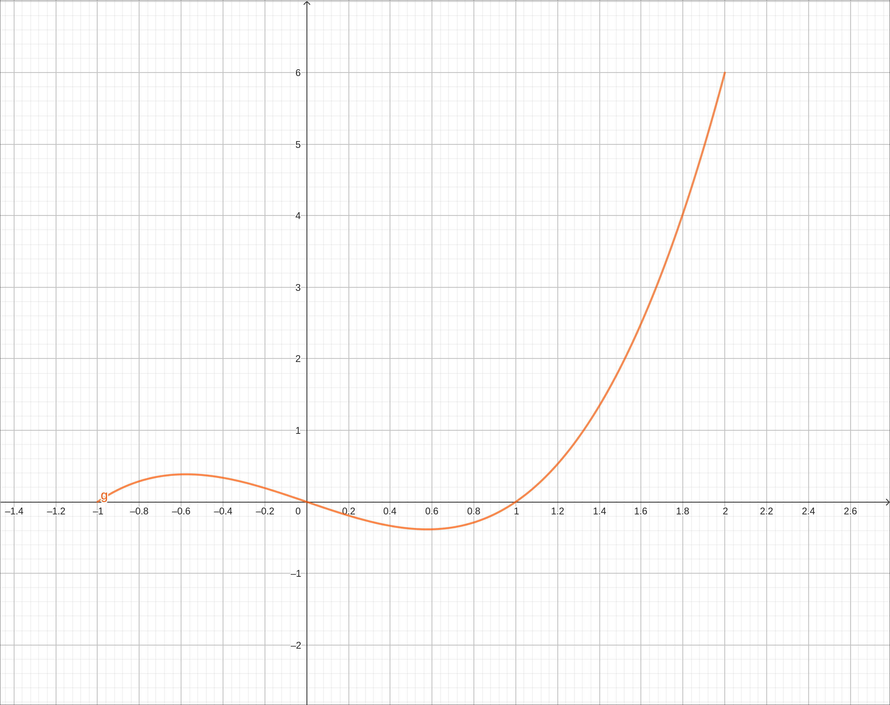
\(f(x) = x^3-x\) Restricted to \([-1, 2]\)#
If you want to restrict the domain of the function to \([-1, 2]\) for a better visualization (as above) you can do it by first inputting the region and then attaching the region to the function. In a new cell, input
-1 <= x <= 2
This will graph the region and assign it to a variable, we will assume that the variable is a. Then you can attach it to the function with f,a. This will make an automatic if statement. Deselect the original function and the graph of the domain and you will get an image like the one above.
CLAE#
Input and graph the function,
x^3-x
\(f(x) = x^3-x\)#
To find the critical numbers first find the derivative, select the expression, select Calculus > Derivative, variable x, order 1. The result is \(3 x^{2} - 1\). Then solve the equation \(f'(x) = 3 x^{2} - 1 = 0\) by selecting Algebra > Solve, variable x and the result will be,
Click and drag these over to the graph and change the type to vertical lines.
\(f(x) = x^3-x\) with Critical Numbers#
To get the corresponding y-values there are two options,
Option 1: Select the original function, select Algebra > Evaluate, the variable is x, for the expression input R3[0]. This assumes that the solutions to the derivative equaling 0 are in the R3 result. What R3[0] will do is extract the first entry of the list stored in R3. Hence it will evaluate the function at the first solution. Then do the same thing again but this time use R3[1] to evaluate the second solution. Your results will be \(\frac{2 \sqrt{3}}{9} \approx 0.384900179459751\) and \(-\frac{2 \sqrt{3}}{9} \approx -0.384900179459751\) respectively.
Option 2: First extract all the solutions to their own output cells by selecting the solution list output, then select Edit > Extract from List > Extract All List Entries. Now evaluate each one by selecting the original function, then select Algebra > Evaluate, the variable is x, for the expression input R4 (assuming that the first entry went into R4). Then do the same but use R5 instead of R4. Your results will be \(\frac{2 \sqrt{3}}{9} \approx 0.384900179459751\) and \(-\frac{2 \sqrt{3}}{9} \approx -0.384900179459751\) respectively.
Now evaluate the expression at the endpoints by select the original function, then select Algebra > Evaluate, the variable is x, and \(-1\) for the expression, then do the same with 2. The results should be 0 and 6 respectively.
So the function has an absolute minimum of \(-\frac{2 \sqrt{3}}{9} \approx -0.384900179459751\) at \(x = \frac{\sqrt{3}}{3} \approx 0.577350269189626\) and an absolute maximum of 6 at \(x = 2\).
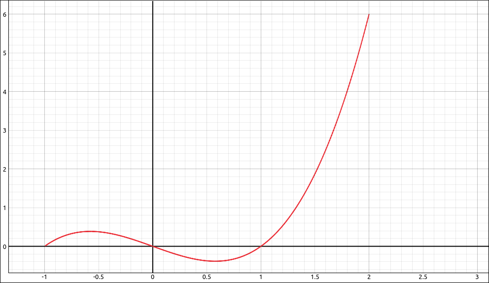
\(f(x) = x^3-x\) Restricted to \([-1, 2]\)#
If you want to restrict the domain to \([-1, 2]\) for better visualization you can do it with a piecewise defined function. If we assume that the original function is in the R1 result then all you need to do is select Edit > Input Piecewise Defined Function or the corresponding toolbar button. Change the expressions to 1, in the expression cell input R1 and in the domain cell input (x >= -1) & (x <= 2). Select OK and the restricted domain function will be loaded into the CAS,
Click and drag this over to the graph and deselect the original expression.
Again, we could use the maximum and minimum finder in CLAE to do this. Select the function, then select Calculus >> Maximums and Minimums, the bounds are \(-1\) and 2, we want Absolute, Both, Point, and Exact. Click OK and we get,
Plotting these and the original function gives us the image,
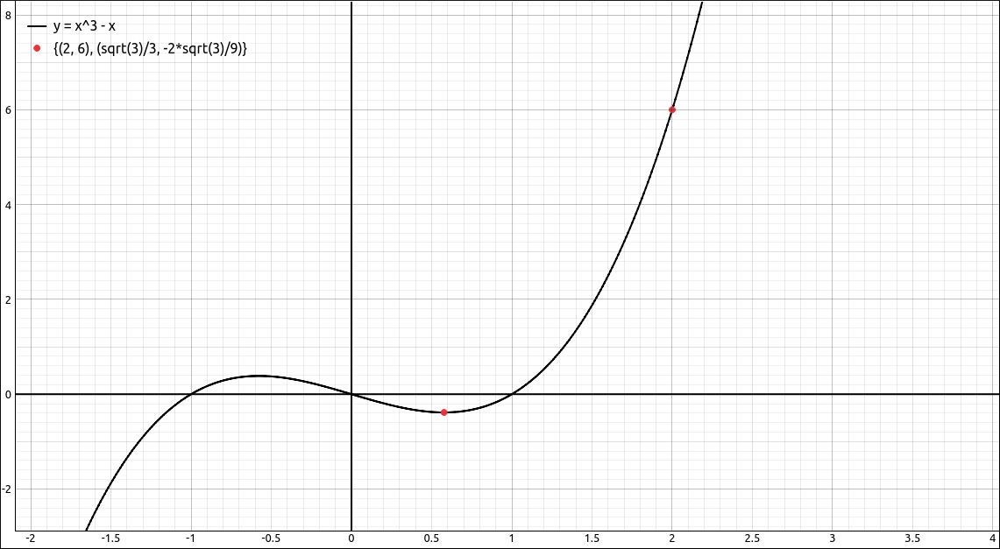
\(f(x) = x^3-x\) with Maximum and Minimum#
Maxima#
Input and graph the function,
kill(all);
f(x):=x^3-x
wxplot2d(f(x),[x,-1,2])
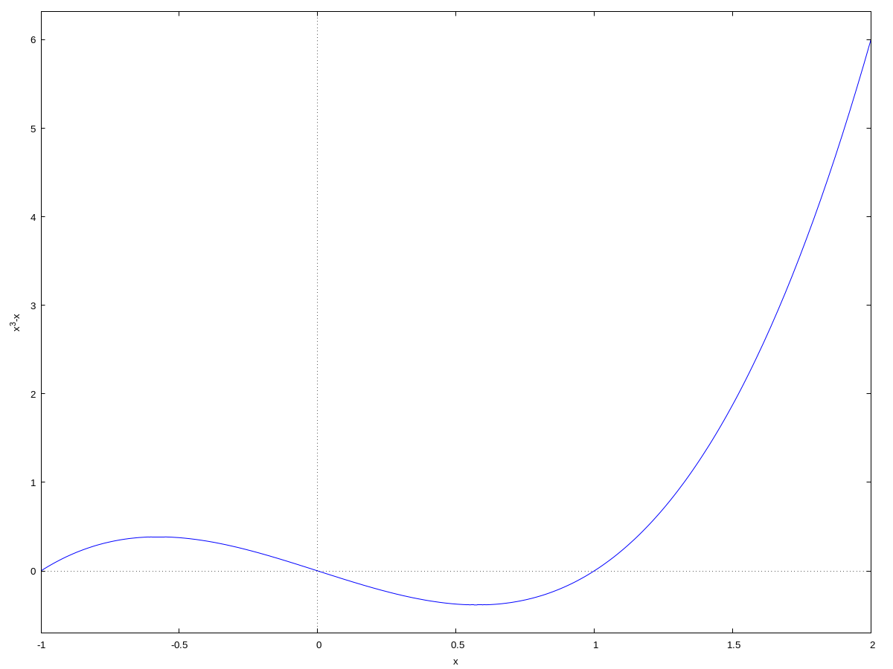
\(f(x) = x^3-x\)#
Take the derivative,
df:diff(f(x),x)
Solve \(f'(x) = 0\),
sl:solve(df=0,x)
The result will be,
To get the corresponding y-values we can evaluate each of the two solutions by extracting the values from the list of solutions. To evaluate the function at the first solution can be done with,
f(rhs(sl[1]))
and the second can be done with,
f(rhs(sl[2]))
What is happening here is that the solution list was stored in sl from our solve command. Then sl[1] is the first entry, sl[2] is the second entry, and so on if the list was longer. Each entry is an equation and we want the right hand side of the equation, which is what the rhs function extracts. Once extracted we simple evaluate the function at that number. Your results should be the following, respectively.
To finish this up we evaluate the function at the endpoints,
f(-1);
f(2)
getting 0 and 6 respectively. So the function has an absolute minimum of \(-\frac{2 \sqrt{3}}{9} \approx -0.384900179459751\) at \(x = \frac{\sqrt{3}}{3} \approx 0.577350269189626\) and an absolute maximum of 6 at \(x = 2\).
Example: \(f(x) = x^5-3 x^3+x\)#
In this example we are going to find all the local maximums and minimums of the function \(f(x) = x^5-3x^3+x\).
GeoGebra#
Input the function,
x^5 - 3 x^3 + x
Use the methods from the first example to find the local maximums and minimums.
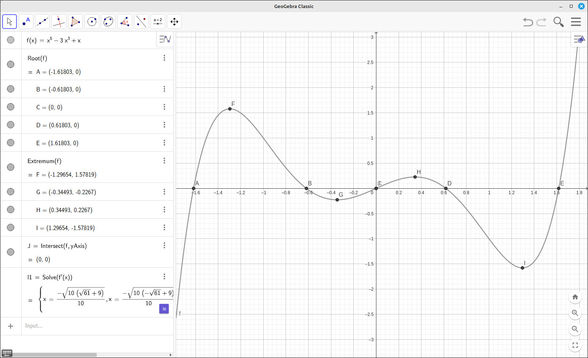
\(f(x) = x^5-3 x^3+x\)#
CLAE#
Input and graph the function,
x^5 - 3*x^3 + x
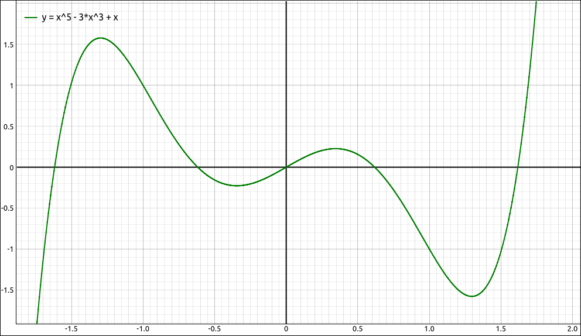
\(f(x) = x^5-3 x^3+x\)#
Follow the procedures in the first example to find the local maximums and minimums, the critical numbers are,
Evaluating the function at each of these we see that this function has two local maximums and two local minimums. The local maximums are
and
The local minimums are
and
Using CLAEs maximum and minimum finder, select the function, then select Calculus > Maximums and Minimums, Local, Both, Point, Exact, will return,
which simplifies to
and approximates to
Plotting gives us,
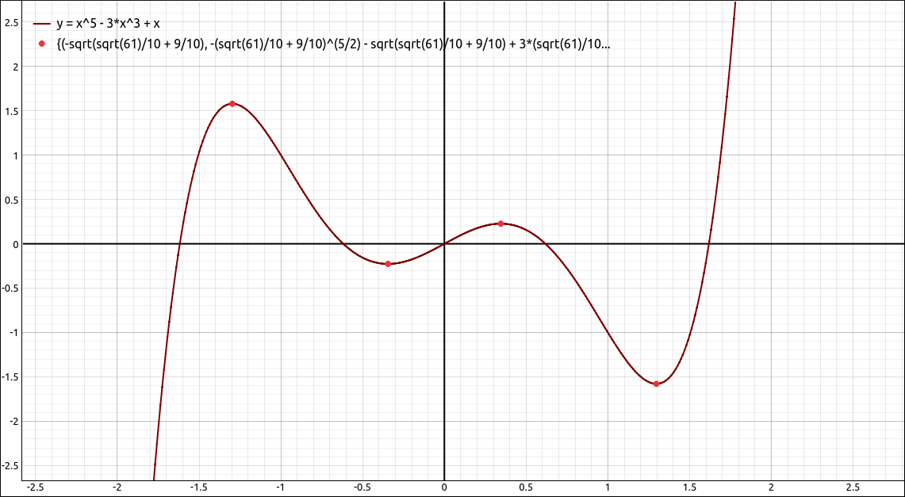
\(f(x) = x^5-3 x^3+x\) with Extreme Points#
Maxima#
Input and graph the function,
kill(all);
f(x):=x^5-3*x^3+x
wxplot2d(f(x),[x,-2,2])
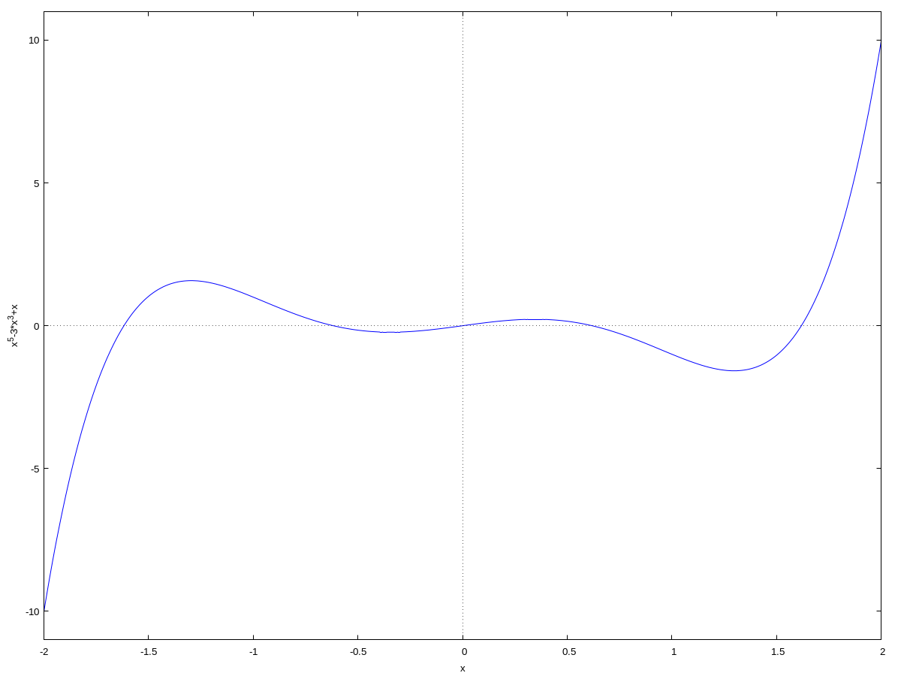
\(f(x) = x^5-3 x^3+x\)#
Take the derivative,
df:diff(f(x),x)
Solve \(f'(x) = 0\),
sl:solve(df=0,x)
The result will be,
approximately
Evaluating the original function at these points gives, respectively,
Example: \(f(x) = \frac{x^{3} - 3 x^{2} + x - 1}{x^{2} - 4}\)#
For this example we will just find the critical numbers to \(f(x) = \frac{x^{3} - 3 x^{2} + x - 1}{x^{2} - 4}\).
GeoGebra#
Input the function,
(x^3 - 3 x^2 + x - 1)/(x^2 - 4)
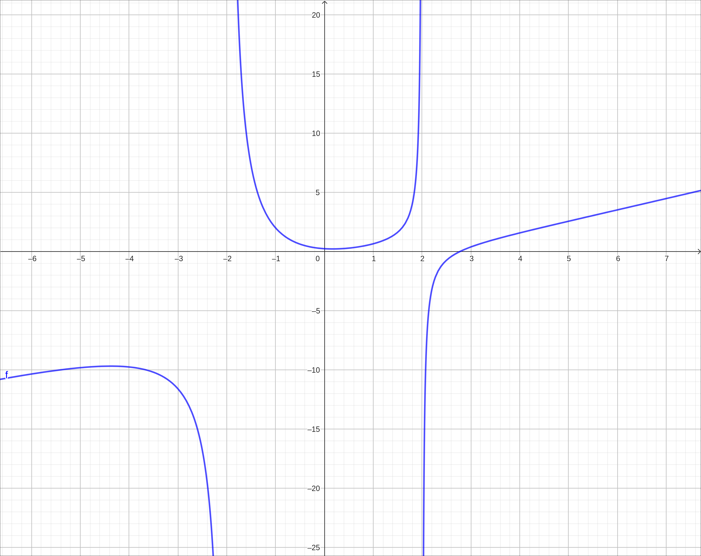
\(f(x) = \frac{x^{3} - 3 x^{2} + x - 1}{x^{2} - 4}\)#
Following the procedures from the first example, solving \(f'(x) = 0\), the Solve command reverts to approximation mode giving \(x = -4.3761\) and \(x = 0.16791\). In the previous examples we never needed to worry about the critical numbers from the derivative not existing. Since the derivative is,
there is the possibility of division by 0. To extract the denominator go to a new cell, type in and select Denominator, then type in f'. It will extract, \(x^{4} - 8 x^{2} + 16\). Now use the Solve command and the results are \(-2\) and 2. These are where the derivative does not exist but we would not consider then critical numbers since the original function does not exist at these points either.
CLAE#
Input the function,
(x^3 - 3*x^2 + x - 1)/(x^2 - 4)
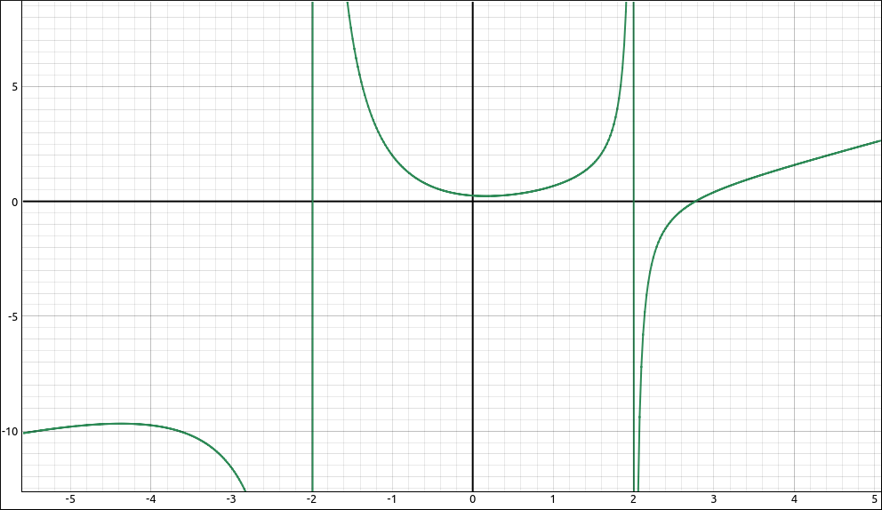
\(f(x) = \frac{x^{3} - 3 x^{2} + x - 1}{x^{2} - 4}\)#
Following the procedures from the first example, the derivative is,
Selecting Algebra > Solve returns the following solutions.
Approximating these gives,
So the first and last are real and the middle two are complex. In the previous examples we never needed to worry about the critical numbers from the derivative not existing. Since the derivative is,
there is the possibility of division by 0. To extract the denominator select the derivative expression, then select Algebra > Rational Expressions > Denominator. If you selected the simplified version then the result is \(x^{4} - 8 x^{2} + 16\) and if you had selected the unsimplified version the result would be \(\left(x^{2} - 4\right)^{3}\). If you apply Algebra > Solve to either of these the results are \(-2\) and 2. These are where the derivative does not exist but we would not consider then critical numbers since the original function does not exist at these points either.
Maxima#
Input and graph the function,
kill(all);
f(x):=(x^3 - 3*x^2 + x - 1)/(x^2 - 4)
wxplot2d(f(x),[x,-5,5],[y,-15,15])
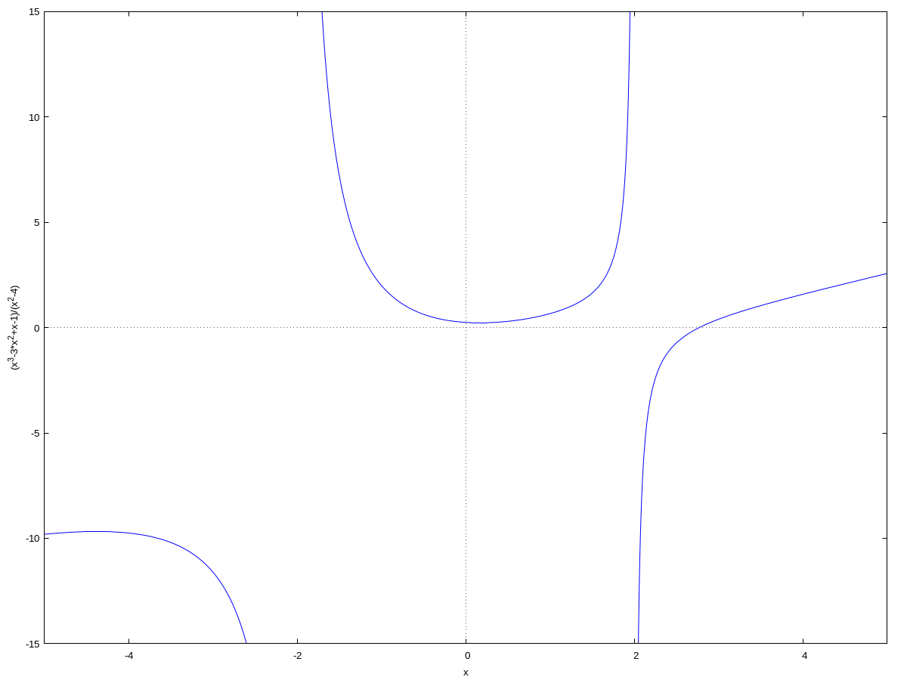
\(f(x) = \frac{x^{3} - 3 x^{2} + x - 1}{x^{2} - 4}\)#
Following the procedures from the first example, the derivative is,
df:diff(f(x),x)
dfs:ratsimp(df)
The solutions to \(f'(x) = 0\) give,
sl:solve(df=0,x)
which approximates to
float(sl), numer;
In the previous examples we never needed to worry about the critical numbers from the derivative not existing. Since the derivative is,
there is the possibility of division by 0. To extract the denominator,
dfsd:denom(dfs)
which returns \(x^{4} - 8 x^{2} + 16\). Note we are using the simplified version that already simplified the rational expression. Note, do not use the unsimplified version, the denom function just returns 1. Solving this expression for 0,
solve(dfsd)
the results are \(-2\) and 2. These are where the derivative does not exist but we would not consider then critical numbers since the original function does not exist at these points either.